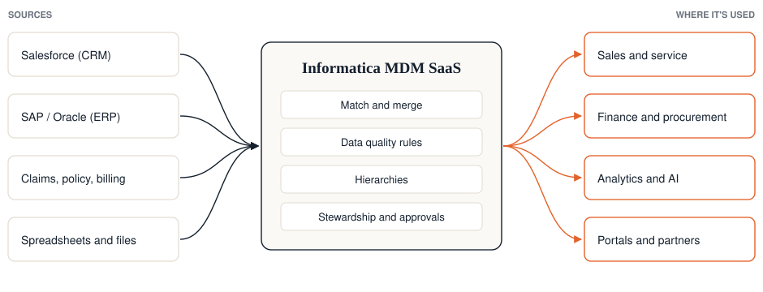

An Informatica MDM implementation, step by step.
Most MDM programs that disappoint were scoped around data instead of an outcome. Here is how we run a new Informatica MDM implementation so it pays back, and how we price it before you start.
What kind of MDM project is it?
New Informatica MDM implementation→ Moving an on-prem hub to MDM SaaS→ Adding a domain to a live hubWe'll scope this one on a short call→ Replacing another MDMWe'll scope this one on a short call→Takes about five minutes. A person on our team reviews every answer. You're not signing up for anything.
The steps
- Pick the use case and scope itOne or two bounded business outcomes, such as a single customer view for sales or a trusted supplier list for procurement. We size the entities, sources, consuming systems, hierarchies and volumes behind them.
- Design the model and the matchingThe entity model, the hierarchies and the match and merge rules, tuned for how your business defines "the same customer", not left on defaults. Data owners sign off before anything is built.
- Build on Informatica MDM SaaSConfigure the hub, data quality rules and stewardship, and connect the sources.
- Load, test and go liveLoad the history, check the golden records with the people who know the data, and go live with a rollback path.
- Put the data to workPush golden records into the systems where decisions happen, such as Salesforce, SAP, Workday or Oracle, in batch or real time. Then scope the next domain.

Best practices that matter most
Start from a decision, not a dataset. Gartner estimates three in four MDM programs miss their business objectives. Tie the first release to a process someone owns and a measure they care about.
Keep the first scope small. One domain and a few sources delivered well beats five domains half done. The platform makes every later domain faster and cheaper.
Own your hierarchy. Build the customer or product hierarchy the business actually uses. For a global B2B distributor we built a four-level customer hierarchy the client owns, synced in real time between Salesforce and Oracle.
Tune matching with real duplicates. Match rules are business rules. Test them on your own messy records with the people who will steward them.
Plan for the consumers. MDM pays back only where the golden record shows up. Name the systems that will use it before the build starts.
Common questions
How long does an Informatica MDM implementation take?
It depends on the number of entities, sources, hierarchies and consuming systems. Answer the questionnaire and your estimate gives you a timeline in weeks for your scope.
Should we implement on SaaS or on-prem?
For new implementations we recommend Informatica MDM SaaS. It removes the servers and scaling work that made MDM slow in the past. Hybrid setups are possible where a system has to stay on-prem.
What do you need from us to start?
An owner for the business outcome, access to the source systems, and data stewards who know the records. The questionnaire covers the rest.
Can you fix the price?
For most new implementations, yes, because we scope around bounded use cases with known inputs. See what drives the cost.
Tell us about your project
For domain expansions, replacements and integrations, or anything you'd rather talk through first. An MDM consultant will reply.
Or use the 5-minute questionnaire for a written estimate.
Email us directly at info@zclap.com